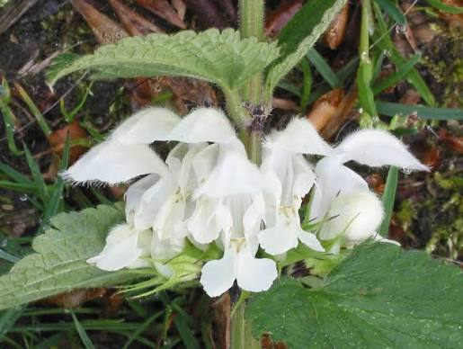
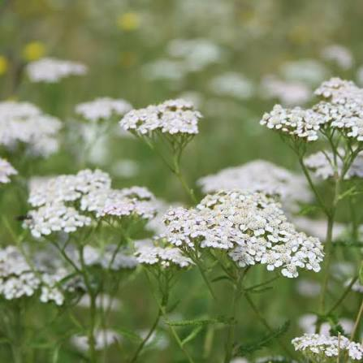
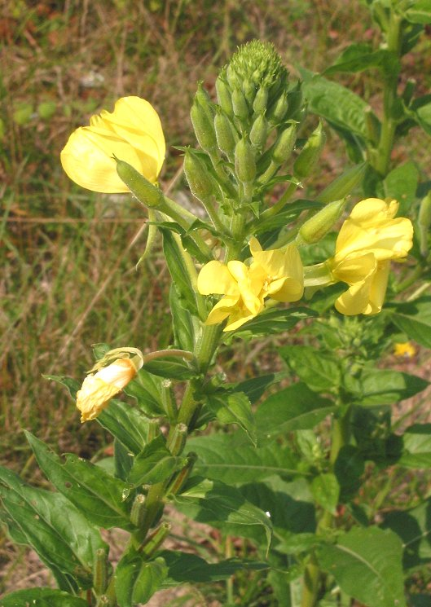
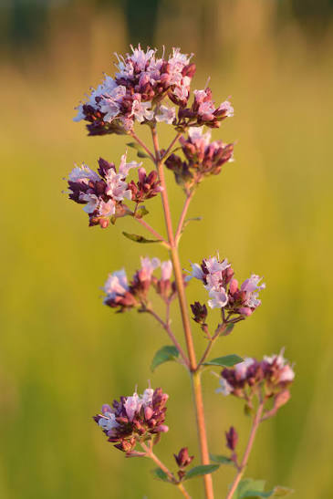

Witte Dovenetel
Lamium album
Lijkt op brandnetel maar "gaatjes" in de bloem.
Alle planten die je in het bloemenveld kunt tegenkomen.

Lamium album
Lijkt op brandnetel maar "gaatjes" in de bloem.

Achillea millefolium
Witte schermen die zweefvliegen en sluipwespen aantrekken.

Oenothera biennis
Gaat 's avonds open en wordt bestoven door nachtvlinders.

Origanum vulgare
Geurige roze bloempjes; een topplant voor vlinders en bijen.

Dipsacus fullonum
Stekelige bloemhoofden; putters eten in de winter de zaden.
Salvia officinalis
Paarse lipbloemen waar hommels in kruipen.

Oenothera biennis
Ecologische rol: Insecten die in de stengels schuilen dienen als voedselbron voor vogels.

Achillea millefolium
Ecologische rol: Trekt bijen en vlinders en andere bestuivers aan. Goed voor graslanden en biodiversiteit.

Berberis vulgaris
Ecologische rol: Bessen zijn een belangrijke voedselbron voor vogels.

Artemisia vulgaris
Ecologische rol: Voedselplant voor larven van veel vlindersoorten.

Artemisia abrotanum
.

Dipsacus fullonum
.

Chelidonium majus
.

Valeriana officinalis
.

Lamium album
.

Origanum vulgare
.

Melissa officinalis
.

Filipendula ulmaria
.

Salvia officinalis
.

Malva sylvestris
.